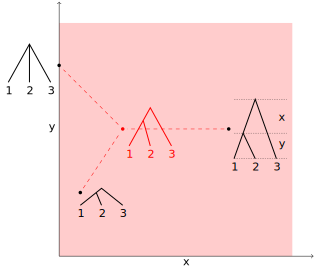
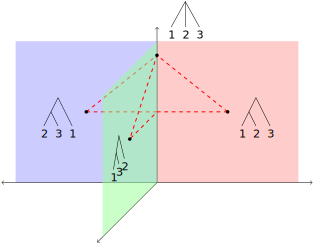
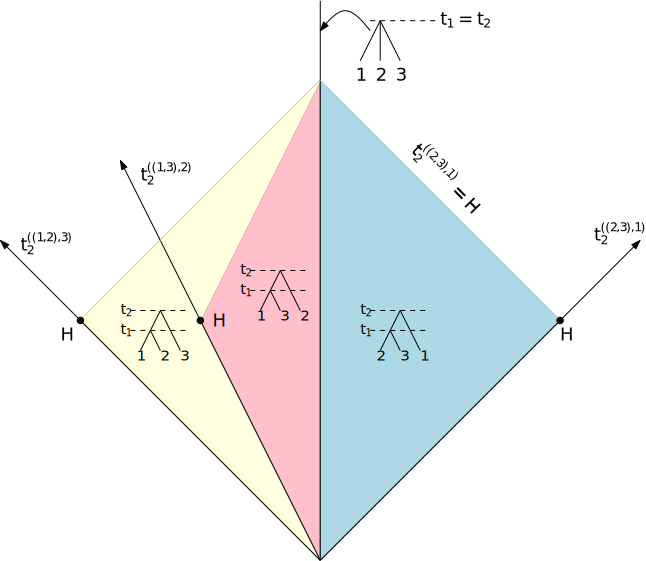
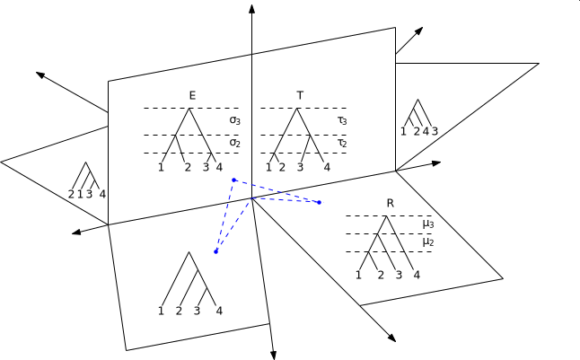
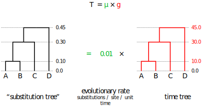
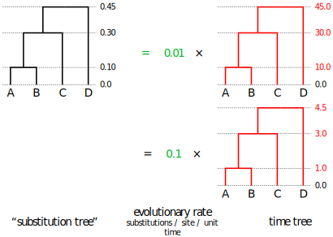
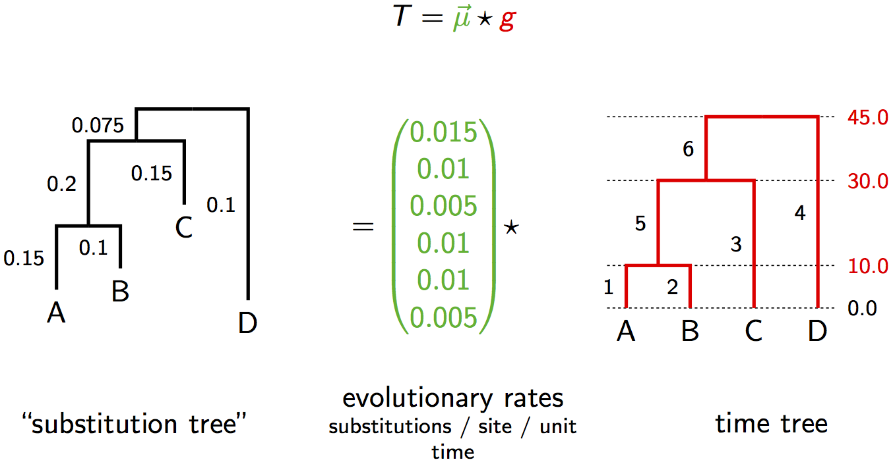
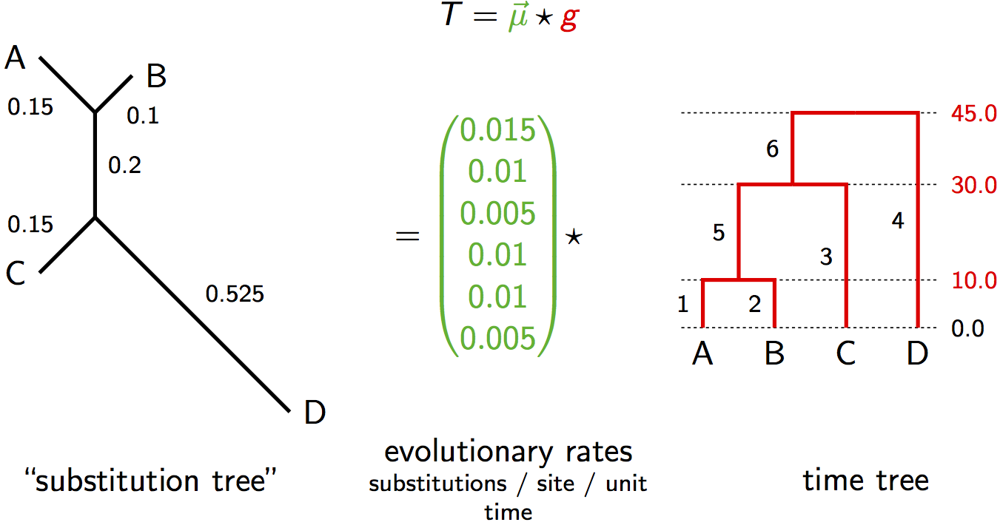
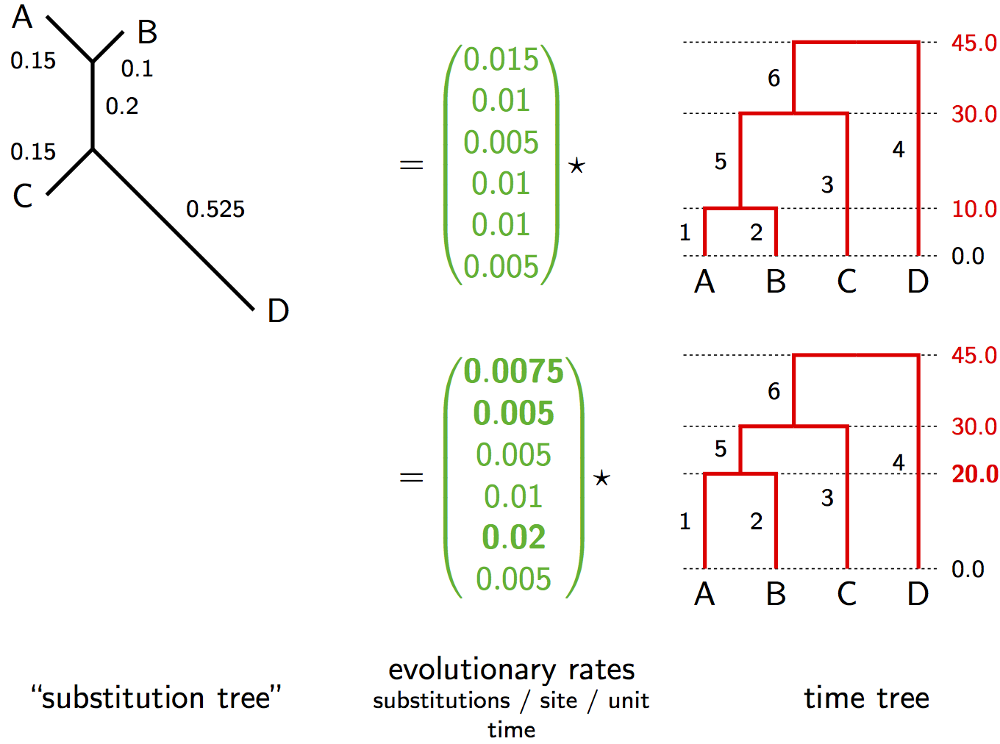

Tree space

- A two-dimensional space representing all
possible time-trees for the topology ((1,2),3).
- x and y, are the two inter-coalescent intervals($t_{root} = x + y$).
- Three trees are displayed, with their arithmetic mean tree.
- Dashed lines show the shortest distances to mean (i.e. deviations from the mean).
Tree space

- The simplest non-trivial tree space for time-trees ($n=3$)
- Each non-degenerate tree topology is a two-dimensional space.
- These subspaces meet at a shared edge representing the star
tree, which is a one-dimensional subspace (parameter is the age of the root)
- Dashed lines are shortest distances between the four displayed trees.
Another space of tip-labeled time-trees

Projection of tree space on 4 taxa

This is a projection of a part of 4-taxa tree space. The full number of subspaces is actually 18, but we only show 6 of them here. Also each subspace is actually a cube, but we show them as squares by fixing the tip-most interval.
Genetic distance = rate $\times$ time
The strict molecular clock parameterization

The "substitution tree" is in units of expected substitutions, i.e. genetic distances.
Non-identifiability of rate and time

Genetic distance = rate $\times$ time
The relaxed molecular clock parameterization

The "substitution tree" is in units of expected substitutions, i.e. genetic distances.
Genetic distance = rate $\times$ time
The relaxed molecular clock parameterization

The "substitution tree" is in units of expected substitutions, i.e. genetic distances.
Non-identifiability of rate and time
